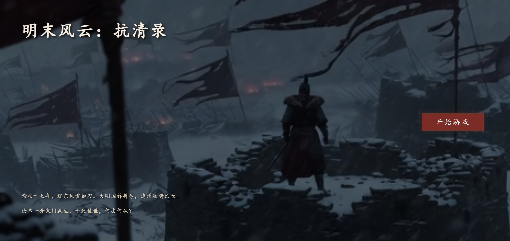
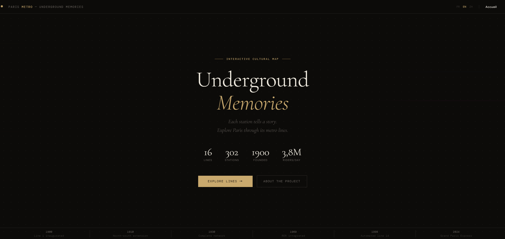
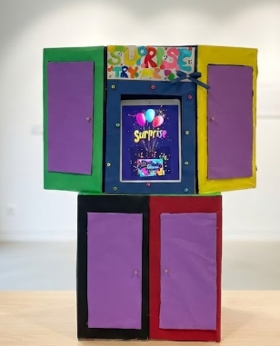

Hi, I'm HU Renjie.
I am a designer and game enthusiast exploring how culture shapes interactive experiences. I find myself constantly analyzing the 'why' behind social dynamics, striving to translate these observations into interactive systems that can either illuminate or solve real-world challenges. Currently pursuing a Master's degree in Interaction, Graphics and Design at Institut Polytechnique de Paris, where I combine design practice with critical analysis to understand games as cultural objects.
Interests & Exploration
- Game Design
- Digital Heritage & Mediation
- Digital Humanities
- UX & HCI Research

Sceaux Explorer
Location-based AR / Digital Heritage
An AR treasure hunt project developed with Unity and Vuforia to explore historical landmarks in Sceaux. This project simulates a "treasure hunt" experience by interacting with the device screen and physical image markers. It includes various interactions such as image scanning, touch rotation, sliding gestures, and phone-shaking motion detection. I also implemented "object-to-object" interaction using multi-target tracking to detect distances between physical targets. The game features a quiz system and historical videos to provide educational value. As a solo developer, I completed the entire process from technical logic to the final APK build.

League of Legends
Rank Meta Analysis & Visualization
This project focuses on visualizing champion win rates for high-ranked League of Legends players (Diamond and above). I collected data from the op.gg platform across patches 14.25 to 15.2 to track the evolving "meta". The project uses a "small-multiple" visualization method, combining line and bar charts to display individual champion trends clearly. This tool helps both players and game designers quickly identify which champions are stable, improving, or in need of balance adjustments. I managed the entire data pipeline by organizing raw information into a structured CSV format for accurate trend tracking.
View Full PDF
Serious Game
Game Design / Cultural Object
Visa Interview Assistant is a text‑based serious game I co‑designed to help international students prepare for French student visa interviews. The game simulates realistic interview scenarios with an interactive favour system, provides immediate feedback, and includes a special “French language lifeline” rule, helping applicants reduce anxiety, build confidence, and improve their performance through repeated practice.

Serious Game
Game Design / Cultural Object
This project is a deep interactive Tabletop RPG (TRPG) engine powered by Large Language Models (LLMs). Moving beyond traditional fixed-branch narratives, the engine leverages the Gemini API to enable dynamic plot evolution. It seamlessly integrates a rigorous late Ming Dynasty historical setting with randomized attribute checks (TRPG mechanics), while ensuring the story adheres to a pre-defined narrative arc. Additionally, the system features a built-in "Knowledge Lexicon" where players can interact with historical keywords in real-time, effectively blending immersive gameplay with educational value.

Paris Métro — Mémoires Souterraines Upcoming
Cultural Interactive Map / Web Development
An interactive web exploration of the Paris métro's cultural heritage. Built with vanilla HTML, CSS, and JavaScript, this project transforms the RATP network into a living archive. Features a hand‑crafted SVG map with zoom, pan, and station highlighting; dynamic info panels displaying historical facts, photos, and tags; and a tri‑lingual interface (FR/EN/ZH) that switches all text on the fly. The design draws on métro line colors and a dark, tactile aesthetic. As solo developer, I handled everything from data curation (29 stations on line 4) to interaction design and final deployment.

Travel Equipment Sharing System
UX Research / Service Design (Surprise Box)
A UX research and service design project that uses an equipment-borrowing system with a “lucky draw” mechanic to help students explore professional travel gear. Based on qualitative interviews with 13 graduate students, the high‑fidelity prototype lowers barriers to adventure and generates actionable usability insights.
Cross-Cultural Analysis: In-Game Monetization Research Thesis(Upcoming)
M1 Major Project | Grade: 18/20
This research applies cross-cultural theories (Hofstede’s dimensions, high-/low-context, hard-/soft-sell techniques) and marketing variables (pricing, colors, symbols) to analyze in-game advertising (IGA) integration in free-to-play games. I compared the Chinese and European versions of Clash of Clans, League of Legends, and Subway Surfers, examining formats, timing, frequency, and intrusiveness. A key contribution is the development of an “Intrusiveness Index” to quantify how ad placement affects user experience. Findings reveal that Chinese UI patterns prioritize psychology‑based efficiency, while Western designs favour immersive consistency. This work extends cultural analysis to IGA monetization strategies, offering insights for global game design.